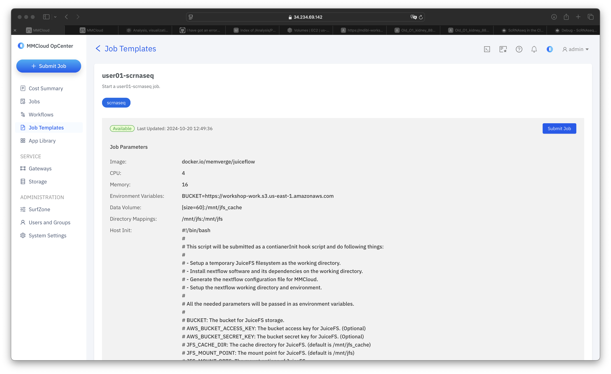
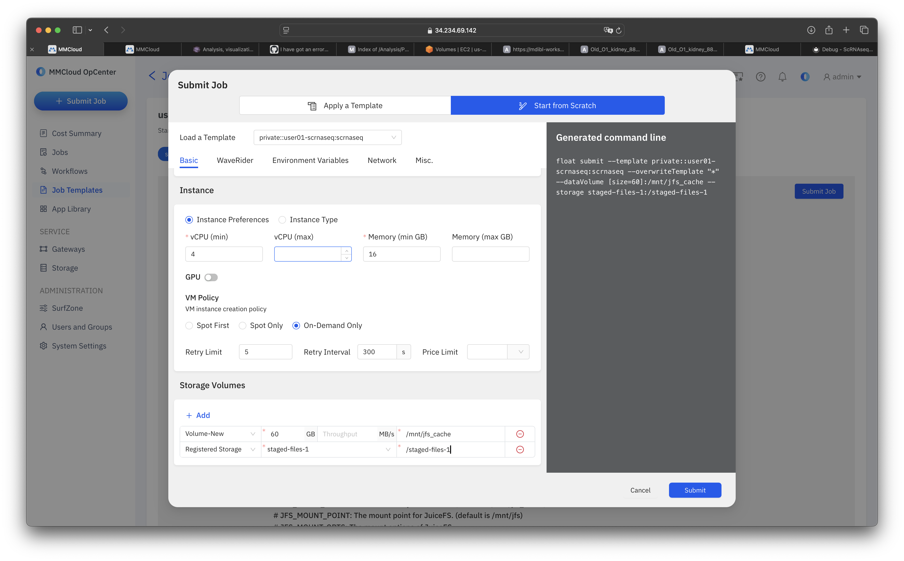

Debug
Surprise Adventure
The Error we are seeing:
2024-10-23T22:49:55.488: Failed to create float image volume:
VolumeLimitExceeded: You have exceeded your maximum gp2 storage limit of 86 TiB in this region.
Please contact AWS Support to request an Elastic Block Store service limit increase.
Solution
Step 0: We increased our AWS limit for gp2 maximum storage 86 TiB to 200 TiB.
Step 1: Go back to your template

Step 2: Select Submit Job
Step 3: Select Start from Scratch
Step 4: Set Mount Point
A. On the Basic Page, scroll to the Storage Volumes section at the bottom:

B. In the Mount Point Field paste the following Mount location:
/staged-files-1

Step 5: Point to Previous Job
A. Navigate to the Environment Variables Page:

B. Select + Add
C. In the Key Field, add the following:
PREVIOUS_JOB_ID
D. In the Value Field, add the ID that corresponds to your username:
User Specific Job IDs
curious-bernard
mdg5kjqo5yqahen5qxin5
tiny-lavoisier
qy9auxnhm6fo0tudjtbir
exotic-keller
f6wyb1lo6re2smb6m9j6k
fabulous-coulomb
w5edz97wi9osuhl1udc4c
magical-goldberg
xht1csr275vziulx7odky
** lethal-ride**
qkl6elbmncy41bdpq3420
spontaneous-carson
k3zex0agw64gu9jp02giu
ecstatic-tesla
vhkzda3nbw6rzg5glijwi
Aissette!!! You are the lucky winner!!! You job completed successfully. You did however choose template 20 instead of template 09, meaning that your output will be in bucket workshop-user20.
backstabbing-pesquet
cl3ckl8kunbq7lwctuyuu
It should end up looking like this (except with your own ID):